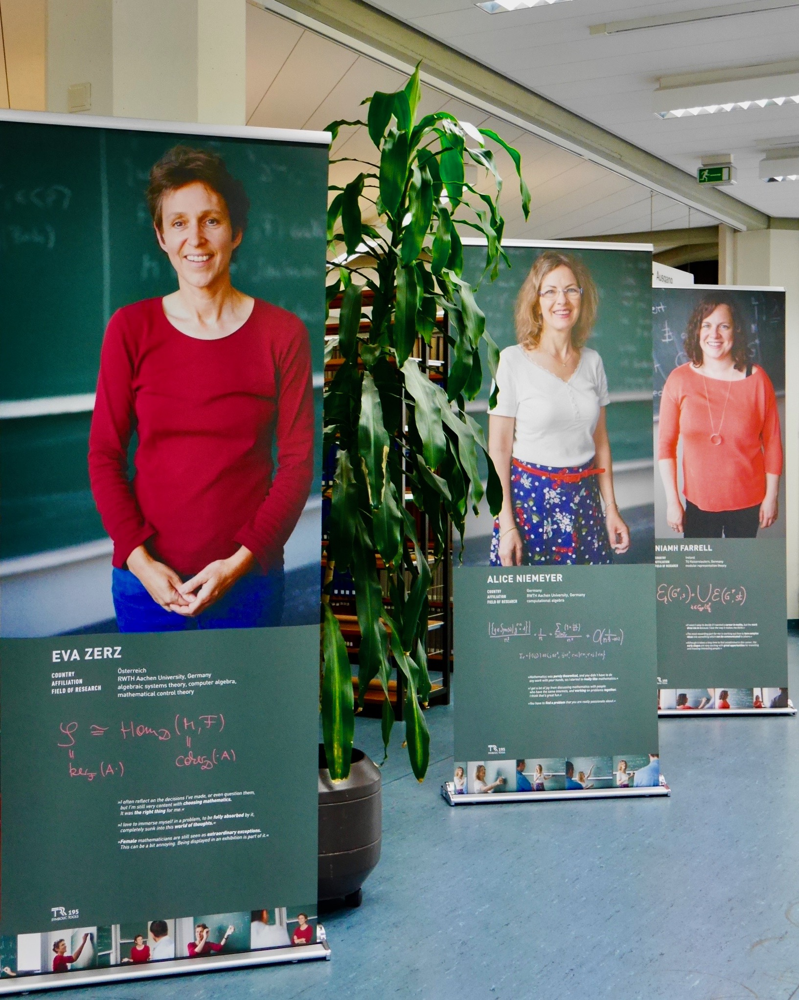
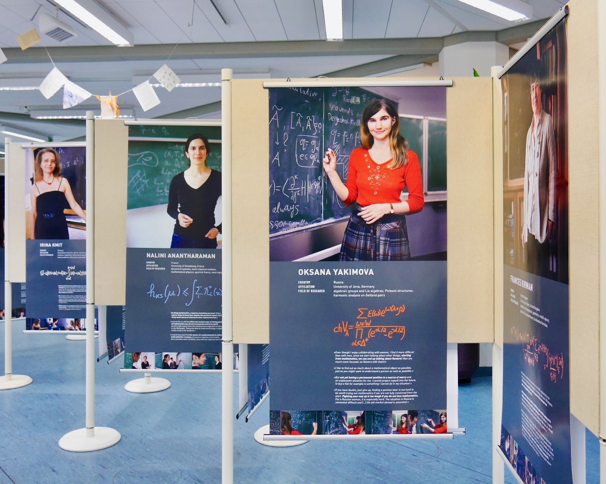
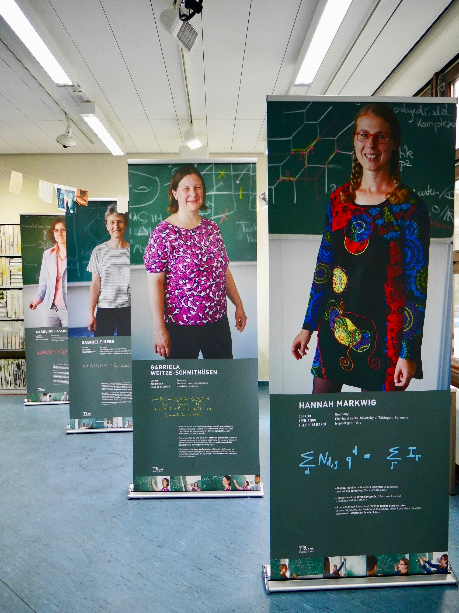
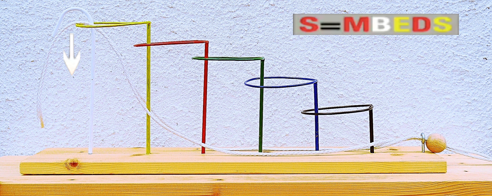

Outreach
Outreach
(!) THIS PAGE IS UNDER CONSTRUCTION (!)
 Ausstellung „Women of Mathematics throughout Europe – meet SFB/TRR 195“
Ausstellung „Women of Mathematics throughout Europe – meet SFB/TRR 195“
Die Originalausstellung „Women of Mathematics throughout Europe – A Gallery of Portraits“ hat Sylvie Paycha zusammen mit der Fotografin Noel Tovia Matoff vor einigen Jahren entwickelt. In Oktober 2018 gastierte diese an der TU Kaiserslautern. Zu diesem Anlass wurden die Forscherinnen des SFB TRR 195 auch abgelichtet, porträtiert und in einer Erweiterung der Originalausstellung gezeigt.
Eröffnung: Montag, den 8. Oktober 2018
Webseite: https://womeninmath.net/venue/kaiserslautern-germany/
Pressemeldung: Ausstellung zeigt Frauen in der Mathematik



Tag der Mathematik 2018 + 2022, TU Kaiserslautern
Workshop angeboten: Die 5 Chinesichen Ringe
Prinzip: Die Chinesischen Ringe sind ein Geduldspiel, dessen Ziel darin besteht, eine lange Schnur von 5 festen, unbeweglichen Ringen, die auf ein Brett montiert sind, zu befreien.

Lösung: Hier geht es zur Lösung des Spieles.
An der EPFL
- 2009-2011: Teilnahme an der Organisation der Schweizer Halbfinalen und Finale der Mathematik und Logikspielemeisterschaft
- 2010: Journées Portes Ouvertes